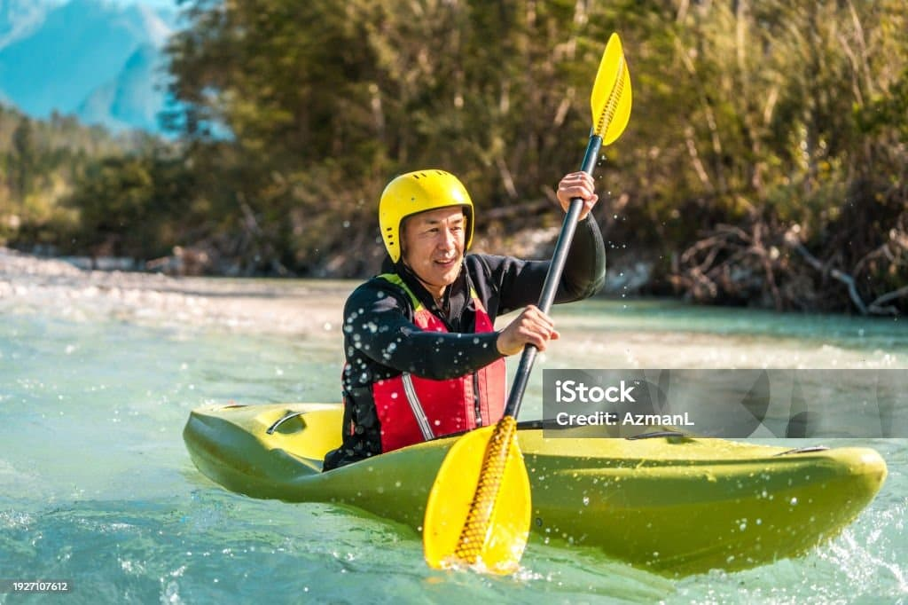

Our Mission
We believe the river changes people for the better. Our mission is to craft safe, memorable, and joy-filled whitewater adventures where friendships deepen, skills grow, and nature inspires. Join us and keep your oar in the water.

We believe the river changes people for the better. Our mission is to craft safe, memorable, and joy-filled whitewater adventures where friendships deepen, skills grow, and nature inspires. Join us and keep your oar in the water.
Founded by river-loving friends with a beat-up raft and a big dream, our company has grown one run, one smile, and one splash at a time. From humble beginnings to seasoned guides, we remain committed to safety, stewardship, and stoke.